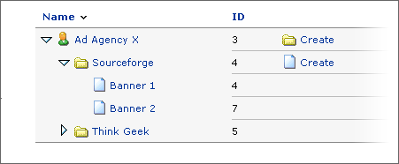

|

A banners is always part of an advertising campaign, which in its turn
is always owned by a client. So, if you want to add a banner, you must
add it to an existing campaign or create a new campaign for it..
There are currently four different types of banners. Database stored banners
and Webserver stored banners are very similar and only differ in the way
they are stored. Linked banners are used to add banners which are stored
on an external server, for example the webserver owned by the client.
HTML banners can be used to add banner which consist of purely HTML code,
such as an interactive form, or other types of rich-media banners.
Destination URL
The address of the website or page where you want to browser to go to,
when a user clicks on the banner. You always need to specify the full
url, including the prefix http://
Alt-text
The text you specify in this field will be shown when the actual banner
image is still loading.
Status text
If you want to display a text in the status area of the browser (usually
in the bottom of the window), you need to enter the text in this field
Dimensions
This field will be automatically filled with right value if you use Database
stored or webserver stored banners. Otherwise you need to manually set
the width and height of the banner. This information is used, when you
want to link a banner to a zone, or when you want to display a banner
on you website with a specific width, height or both.
Keywords
It is possible to assign one or more keywords to every banner, which can
be used when you want to display specific banners on your website. If
you want to assign more than one keyword to a banner you must separate
the different keywords with a space.
Weight
You can influence the probability of how much a banner is displayed. If
you increase the banner weight, the banner will be shown more often than
a banner with a lower weight.
The probability of how much a banner is displayed is not only affected
by the banner weight, but also by the campaign weight. If you want to
know more about how both weight affect the probability, please read chapter
x.x Banner weights
|